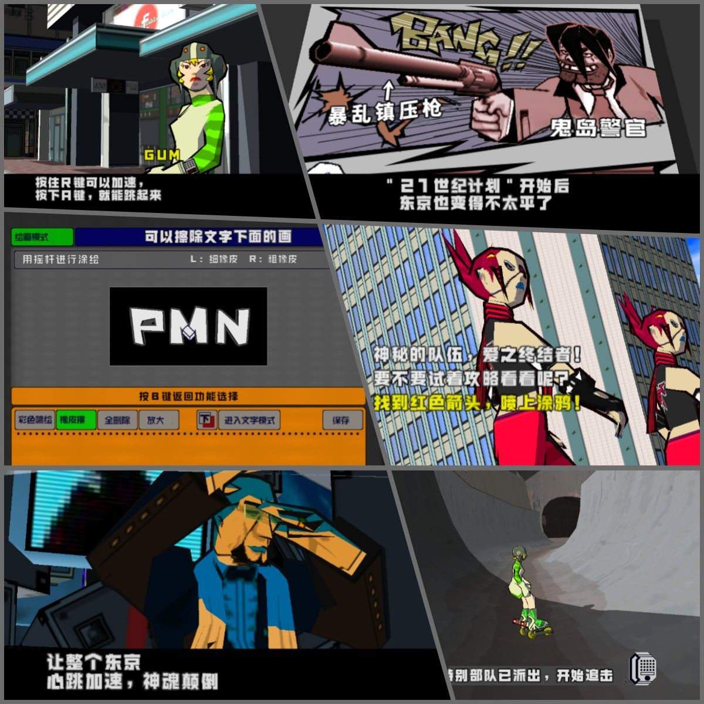

Jet Set Radio
街头涂鸦
欢迎来到 Jet Set Radio (JSR) 中文汉化项目页面！
本项目致力于为这款经典的世嘉Dreamcast游戏《街头涂鸦》提供高质量的简体中文本地化体验。
让更多中文玩家能无障碍地沉浸在虚构都市“东京”街头的自由滑行与涂鸦文化中。
汉化截图
Screenshots 汉化简介
Introduction
本次汉化基于《De La Jet Set Radio》版本进行制作。
De La版本基于原版日版，但合并了欧版新增内容，可视为日版完全版。
汉化内容主要包括：
- 游戏剧情对话，任务提示
- 游戏菜单、UI界面的日文部分
- 教学提示、涂鸦名称的日文部分
我们的目标是尽可能还原原版游戏的风貌，同时提供流畅自然的中文表达。
但原始日文版本也有部分文字内容为英文，故保留了这部分。
游戏中的涂鸦制作环节，因喷绘文字为3D模型，故未能更改，保留了原始的英文字母，数字以及假名。
补丁使用方法
Patching Instructions你需要准备：
- 一份[De La Jet Set Radio] 游戏镜像文件 (GDI格式)。版本为：De La Jet Set Radio v1.001 (2000)(Sega)(JP)(M5)[!]
- 下载本页面提供的汉化补丁文件 (jsr_patcher.zip，48MB)，并解压。
- 把GDI镜像的track3.bin文件放在补丁文件夹中（大小:1,185,760,800字节,CRC-32:03AA66CB）
- 运行打补丁工具，会自动开始打补丁，并生成新的track3.bin文件。具体可以看补丁文件附带的说明。
- 注意： 模拟器或者主机需要把语言设置为日语，才能显示汉化内容。
下载补丁
Patch [Download JSR Chinese Patch v1.0]
当前版本：v1.0 (发布日期: 2025-4-29)
文件大小：49MB
汉化成员
Staff Credits
aikika
狸克
声明
Disclaimer本中文汉化补丁是基于对原版游戏的热爱而制作的免费、非官方作品，仅供学习和交流使用。
游戏本身的版权归原始开发商 [SEGA] 所有。本补丁并未获取官方授权。
禁止将本补丁或打好补丁的游戏用于任何商业目的。
因使用本补丁可能造成的任何直接或间接损失，汉化者不承担任何责任。您需要自行承担使用风险。
本汉化项目遵循 Creative Commons Attribution-NonCommercial-ShareAlike 4.0 International (CC BY-NC-SA 4.0) 协议进行授权。
如果您希望基于本汉化版进行二次创作或移植，请务必遵守以下协议要求：
- 署名 (Attribution): 您必须明确标示本项目汉化成员 (aikika, 狸克)，并提供指向本项目的原始链接或来源说明。
- 非商业性使用 (NonCommercial): 您不得将本项目或基于本项目衍生的作品用于任何商业目的。
- 相同方式共享 (ShareAlike): 如果您基于本项目进行修改、移植或二次创作，您必须以相同的 CC BY-NC-SA 4.0 协议分发您的贡献。
请阅读完整的授权协议以了解详细信息。
2025 Ailyth99